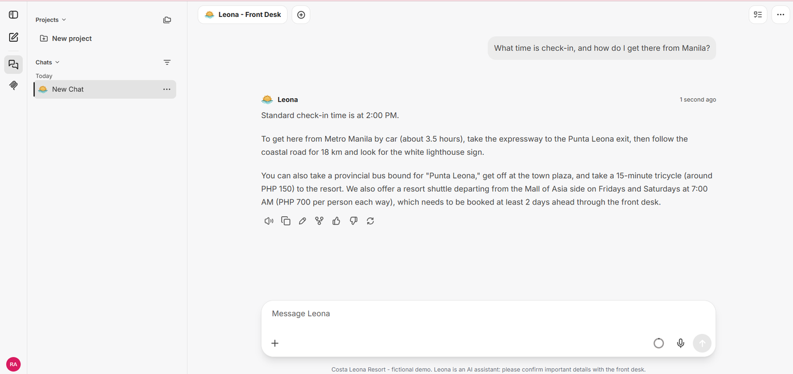
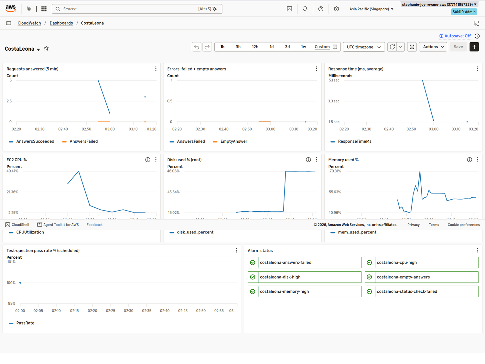
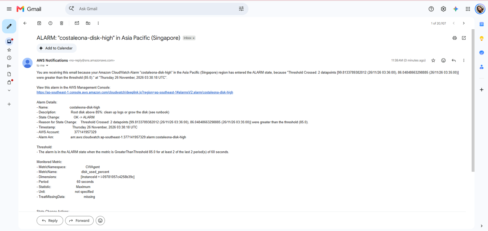

Meet Leona, the front desk of Costa Leona Resort.
An open-source AI chat reskinned into a resort assistant, deployed on AWS and run like a real service: monitored, backed up, secured and documented. Everything on this site is backed by evidence from the running system.

The project in plain English
A virtual front desk
Costa Leona Resort is a fictional beach resort. Leona answers guests' questions about rooms, prices, check-in and check-out, house rules and directions, in English or Filipino, using six short resort documents. It never books, charges or decides anything about a person.
How it was run before
The starting point was an unmodified chat application on a laptop. It knew nothing about the resort (only 9/30 of my 30 test questions answered correctly), nobody would be told if it broke, nothing was backed up, its keys lived in a local file, the AWS account was set up with the all-powerful root login, and nothing recorded who changed what.
Reskin, deploy, operate
New identity, knowledge and wording; deployed behind HTTPS; every key moved into Parameter Store; MFA and a normal user that borrows admin rights only when needed; CloudTrail; a dashboard and eight e-mail alarms; hourly automated backups and test questions; a proven restore; and a deliberately created disk-full fault that I found, fixed, prevented and wrote a runbook for.
Measured results
- Quality on the same 30 questions: 9/30 (30%) → 30/30 (100%)
- Alarms: 0 → 8, a real alert reached my inbox 3 min 34 s after the fault began
- Backups: none → hourly, restore in 25 s
- Secrets in the repository: 0
Watch the walkthrough
The reskin, the system running in AWS, the dashboard and alarms, the restore and the fault.
Everything, with the evidence beside each claim

AWS infrastructure design
The diagram of every service and how a question travels to the model and back.
Open
The system and its card
Base system, reskin, data, model, three test questions and the honest quality number.
Open
Monitor, back up, secure
Dashboard, alarms, the real alert, restore results and the security controls.
Open
Automation and the incident
Two scheduled jobs, the disk-full fault, root cause, fix and runbook.
Open
Before and after
The same measurements on both sides, with graphs and cost.
Open
The baseline
The environment before I touched it, measured.
Open